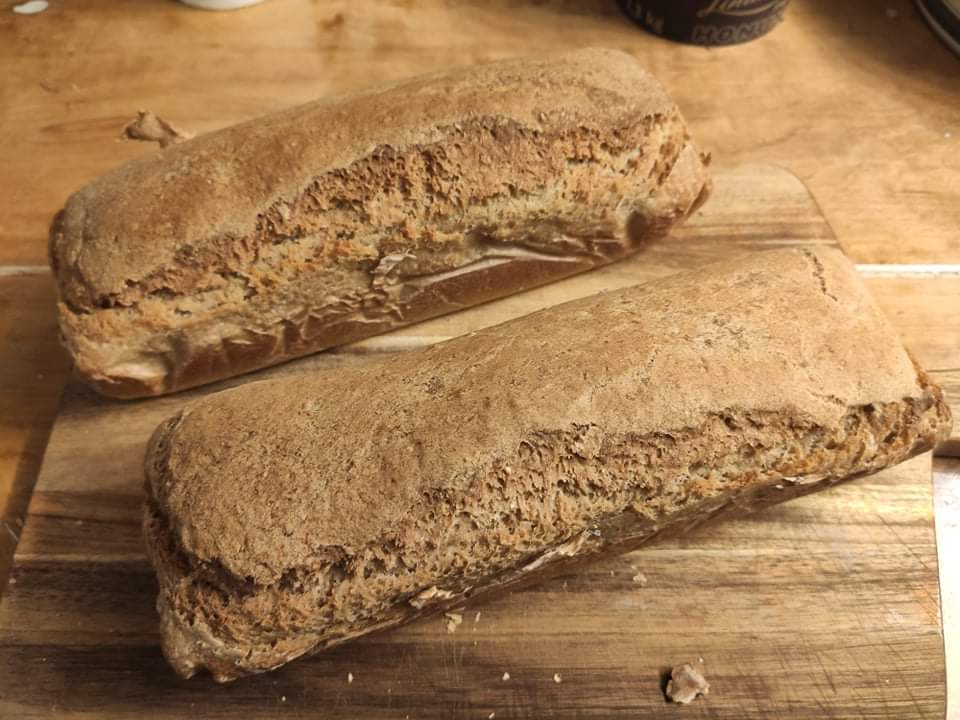

Home
Spelt Bread

The spelt bread, made with 100% spelt flour.
Time to prepare and bake, about two hours, and about 15 minutes of active kitchen time.
INGREDIENTS:
- 800g - spelt flour
- 7g - dry yeast
- 650ml - water
- 2 - teaspoons sea salt
- 1 - teaspoons honey
- 2 - tablespoons olive oil
INSTRUCTION
- Add the flour, salt and yeast to a large bowl - mix well
- Add honey, olive oil and the water - knead for about 5-7 minutes
- Put the dough into a parchment-lined metal baking tin and cover with a cloth. Leave it to rise in a warm, draft-free place for an hour or until it is doubled in volume. While it's rising, heat your oven to 175C.
- Bake the bread for 1 hour. Remove from the baking tin and cool for ten minutes on a rack before cutting.
- You can keep the bread frozen.
Enjoy your meal.